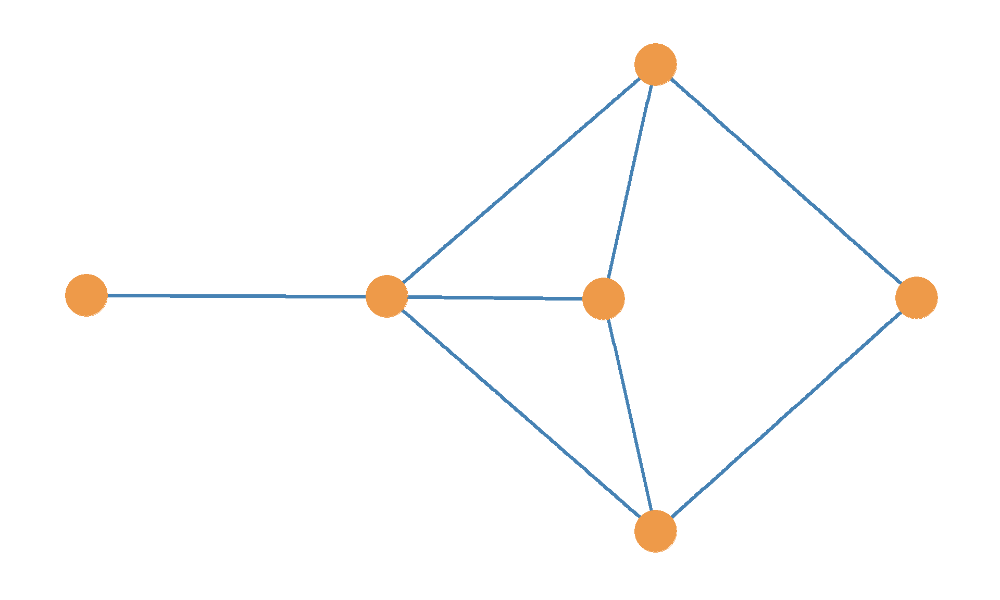
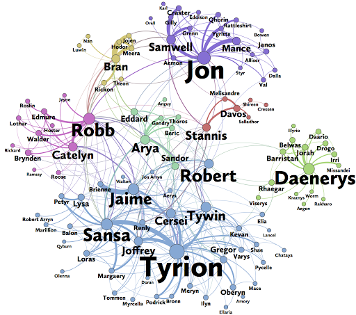
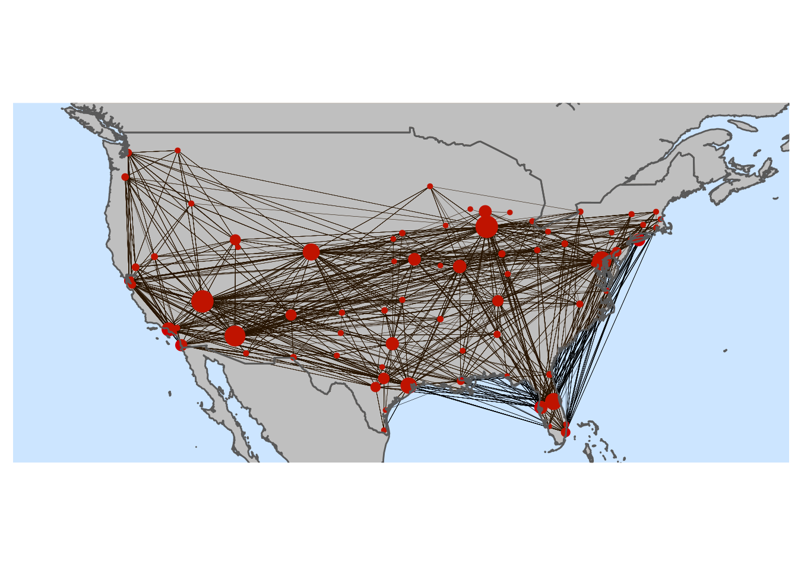
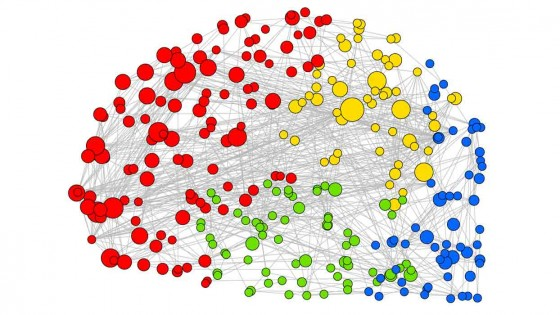
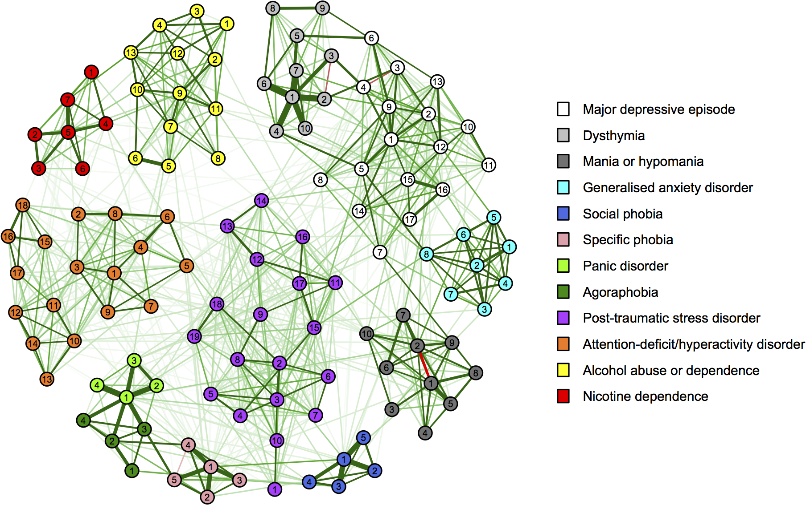
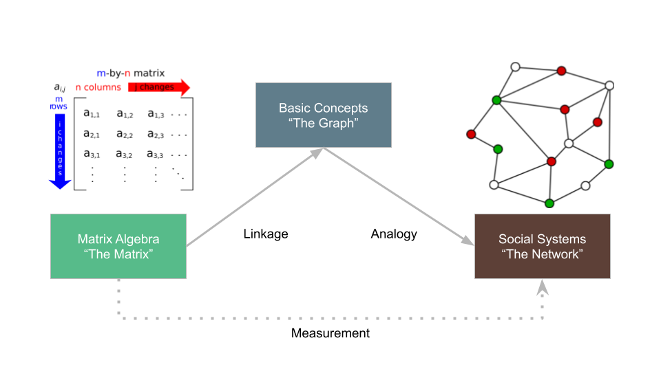

1 What are Networks?
These days, networks and talk about “social networks” is everywhere. It was not always so, the discipline of social network analysis (SNA) developed quietly during the 1960s and 1970s out of scattered lines of work in anthropology, sociology, psychology, mathematics, and communication. It wasn’t until the 1970s that a formal group was founded to study social networks (the International Network of Social Network Analysis or INSNA). Today, network science is an interdisciplinary field uniting physics, computer science, biology, brain science, sociology, anthropology, economics, and a variety of other fields. All are come together around the idea of a “network.” There is now a formal group that includes all scientists from sociologists, to psychologists, to physicists, computer scientists and data scientists interested in the study of networks of all kinds it is called the The Network Science Society (NetSci).
1.1 What is a Network?
So what is a network? Minimally, a network is composed of a set of units or entities. These are some times called nodes or vertices, however what makes these units into a network is the fact that at least some pairs of them are joined by a set of links or ties. These are also sometimes called edges. So a network is essentially a set of nodes some of which are linked together, usually because the units interact in some ways, and the come to be connected via some kind of relationship. In social networks, the nodes can be people and the connections can be any type of social tie (e.g., friendship, enmity, co-working), whether positive or negative, between them.

In future lessons, we will discuss the different types of ties that can exist in social networks as well as the major social network theories that have been developed by sociologists, anthropologists, and organization theorists to explain why these types of ties exist, how they work, and what benefits (or drawbacks) they have for people and organizations.
In a point and line plot such as the one shown in Figure 1.1, networks are represented as pictures. These kinds of pictures are also sometimes called sociograms or network diagrams (the people who don’t like them call them “hairballs”). The convention in these kind of pictures of networks is that the nodes (e.g., people) are drawn as circles (or some other polygon such as a triangles or squares) and the connections, ties, or links between people are drawn as lines or sometimes, if some kind of direction is implied, as arrows.
This way of representing networks is occasionally called a “graph”, although we will see that the idea of a graph is a little more abstract than just a picture. So in this class we will make a strong differentiation between pictorial network representations, and the mathematical concept of graph. When referring to the former, we will use the term plot or network diagram, reserving the term graph for the abstract mathematical object. In future lessons, we will get into more details about pictorial (and non-pictorial) ways of thinking about networks and how they connect to other ways of representing them.
1.2 Types of Networks
Given the very broad definition of networks given in preceding, it should start to dawn on you why people think that networks are everywhere. And, come to think of it, they kind of are! Any system of interacting parts or entities can be depicted and analyzed as a network. That is why the idea of a network cuts across the information (e.g., networks of words in a text), social (networks of students in a school), physical (networks of servers on the internet), biological (networks of neurons in the brain) sciences, and psychological (networks of symptoms of mental disorders). The diagram in Figure 1.2 gives you an idea of the different types of networked systems that exist in the world.

For instance, some social networks do not even have to be made up of real people! In fictional worlds, such as the Game of Thrones HBO series created from the books written by George R. R. Martin, some characters meet and get to know one another, but others never meet (or more likely in this show, (spoiler!) die before they get to meet). So we can construct a social network made up of acquaintance relations between the characters (who ended up meeting whom) such as the one depicted in Figure 1.3. This is a social network because the links are composed of a psychological or emotional relation between people. In this case the relation “knowing somebody” in the GoT world is an example of a symmetric tie between people (we will see a symmetric tie is in #sec-ties). In Figure 1.3, the size of the name of each character is proportional to the centrality of the actor in the network. As we will see in Chapter 16, centrality is an index of how important a given actor is in a network. So, even if you’ve never watched the show, you’ll know that Tyrion, Daenerys, and Jon are pretty important people in this show!

Other networks are composed of links between physical technological systems not people. Take, for instance, the various airports (large and small, international and regional) in the United States. Everyday, some number of flights departs from one airport and lands on another. This means that airports in the US are linked via directed (e.g., from/to) ties in a socio-Technical network. This network is “socio-technical because it involves both social and technological links built from the flights that go from airport to the next (see Figure 1.4). The network is social because it is composed of people traveling. The network is also technological because its links are made possible by a complex web of air-flight technology, including planes, radars, in-flight computer systems and so forth. As we will in Chapter 5, the directed links between airports are an example of an asymmetric tie; some airports fly a lot to other airports (e.g., Small Regional to LAX), but other airports (e.g., LAX) only schedule flights to other big airports).

All of us carry around a very complex and staggeringly large network, composed of millions of nodes and billions of connections. The network is called the brain (see Figure 1.5). The nodes are a special type of biological cell called a neuron. Neurons are special because they have these filaments called dendrites and this long body called an axon. The axon of one neuron links up to the dendrites of another one, generating a large-scale complex network that allows you to breath, eat, drink, think, see, smell and read these pages. The brain is a biological network, because the nodes are biological units (neurons) as are the connections. Other biological networks include ecosystems were the nodes are species and the links are various types of relations between, some antagonistic (predator/prey) and others mutualistic.

The nodes in a network can also be composed of psychological entities like attitudes, feelings, norms, types of thoughts, or emotions. In these psychological networks two entities are connected if they tend to occur in the same people. For instance, people who are have social anxiety, also experience loneliness, which is linked to depression. Figure 1.6 shows just such a network of symptoms, taken from [Diagnostic and Statistical Manual of Mental Disorders] created by psychological scientists who study psychopathology. In these network, the symptoms that cluster together (shown as nodes of different color) come to define specific types of mental disorders, like “Social Phobia” or “Panic Disorders.”
1.5 Networks, Graphs, and Matrices
’Social network analysis is an influential, and now increasingly widespread, methodological approach for analyzing the social world. Traditionally, sociologists have studied relationships using a variety of observational strategies, both qualitative, such as ethnography and interviews, and quantitative, such as those based on the social survey. However, beginning in earnest in the 1950s, sociologists began to make concerted use of mathematical techniques from a branch of pure mathematics called graph theory and a branch of applied mathematics called matrix algebra to develop scientific models of social relationships and to come up with measures connecting key concepts from social theory, such as roles, prominence, and prestige, to tangible empirical evidence.
Social Network Analysis (SNA) is the use of graph-theoretic and matrix algebraic techniques to study social structure and social relationships, which exist in real world networks. While much of this activity has to do with the measurement of social network concepts, Social Network Theory is the branch of social networks that tells us what social networks are, what they do, how they make a difference (negative or positive) in the world, and where networks come from and how they change over time.

A key skill you will gain by taking this class is to transition swiftly from these three ways of talking about networks, namely, networks as real world systems of social interactions, networks as represented mathematically as graphs, and networks represented quantitatively as matrices. This three-step transition is represented in Figure 1.11. Another skill you will gain by taking this class is how to apply social network theory to understand how real world networks work and change.
References
Borgatti, Stephen P, and Daniel S Halgin. 2011. “On Network Theory.” Organization Science 22 (5): 1168–81.
Burt, Ronald S. 1995. Structural Holes. Harvard University Press.
Davis, James A. 1963. “Structural Balance, Mechanical Solidarity, and Interpersonal Relations.” American Journal of Sociology 68 (4): 444–62.
Granovetter, Mark S. 1973. “The Strength of Weak Ties.” American Journal of Sociology 78 (6): 1360–80.
Krackhardt, David. 1999. “The Ties That Torture: Simmelian Tie Analysis in Organizations.” Research in the Sociology of Organizations 16 (1): 183–210.
Milgram, Stanley. 1967. “The Small World Problem.” Psychology Today 2 (1): 60–67.